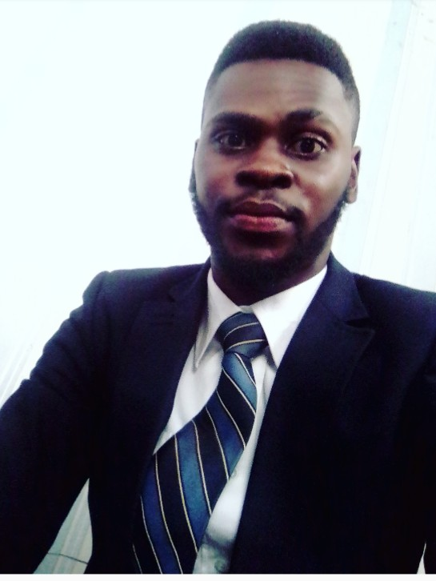

ADENRELE ALADESANMI ADEWUNMI
FHA KUBWA ABUJA

PROFESSIONAL FORTE
through the many years of suceeding and failing, i have gathered a unique skill set that makes me versatile. my unrelenting pursuit of excellence gives me an edge. i am creative and highly motivated young individual with exceptional interpersonal skills. i have an attitude towards learning, i believe learning is a progressive exercise and knowledge comes from most likely people and place.Brainstorming is one of my major competences. I am able to tackle problems with a wide perspective and formulate effective problem resolution options. I do well in unlocking deep thoughts on issues, taking a closer look at challenges and finding a way around them. I create, and open-mindedly stick to strategies for implementing projects; mobilize and deploy adequate inputs in direct proportion as to what is needed. I am able to ensure efficiency and effectiveness in the use of overall resources. I have a genuine desire to serve, and help people succeed.
WORK EXPERIENCES
September 2020 - Present. private limited (India)
Animation/video developer intern
Outline
Animation/video development intern working remotely from Nigeria collaborating with the marketing and content team members to understand needs, review scripts, design storyboards, and create and edit animations catering to the Labdox brand identity via slack, trello, powtoon and zoom.
Key Responsibilities
- Designing & Development of Animation/Short Videos using opensource and subscribed tools as assigned and directed by your point of contacts and mentors
- Using creativity and artistic techniques to tell a story or provide information in visual form.
- Responsible for looking at existing video to create material for marketing EMS and EMS products on the web and social media and create an impressive YouTube/Vimeo/Video presence.
Key Achievements/Projects
- Crafted out technique's to tell story in visual form.
- Team player recognition awards.
August 2018- July 2019
Lardaar consultants
nysc graduate trainee
Outline
Acting as a representative for social media agent where i am contacted to resolve customer’s problems satisfying them a 100%. Maintaining upmost levels of professionalism and top performance in meeting company targets and demands in customer resolutions.
Key responsibilities
- Handling calls both internally and externally to resolve issues customers may have .
- Entering call and email records and data for future reference
Monitoring box bank application for the company sales.
Key Achievements/Projects
- Picked to train new representatives on company goals, ethic and procedures
EDUCATION AND QUALIFICATIONS
AdekunleAjasin University Akungba-Akoko,Ondo 2017
B.sc CHEMISTRY
Goodluck comprehensive college 2011
Secondary School Certificate Examination.(SSCE)
Herbert International School 2005
Primary school leaving certificate
PROFESSIONAL QUALIFICATION & MEMBERSHIPS
- Project management professionals 2019
- Quality health and safety management professional 2019
- Human resources management professional 2019
- Teaching in experts training for effective 21st century educators 2019
- Africa Development Bank (AFDB) certification in coding for employment 2020
- Mac Anderson Institute of Technology certification in Basic Computer Skills 2020
- Google Digital Marketing Skill Certification 2021
- Jobber man Soft-Skill Trainings certification 2019
CORE COMPETENCIES
- Ms office365 proficiency.
- Attention to details and strong analytical ability
- Decisive and determined towards achieving set goals.
- Web development knowledge using (HTML & CSS)
- Animation design's (2D&3D and white board)
- Word press styling’s
- Mathematical skills.
LANGUAGE PROFICIENCY
- Yoruba (mother tongue)
- English: Fluency in Speaking and writing.
- Hausa (Basics)
- French (Basics)
REFEREES
Available on request